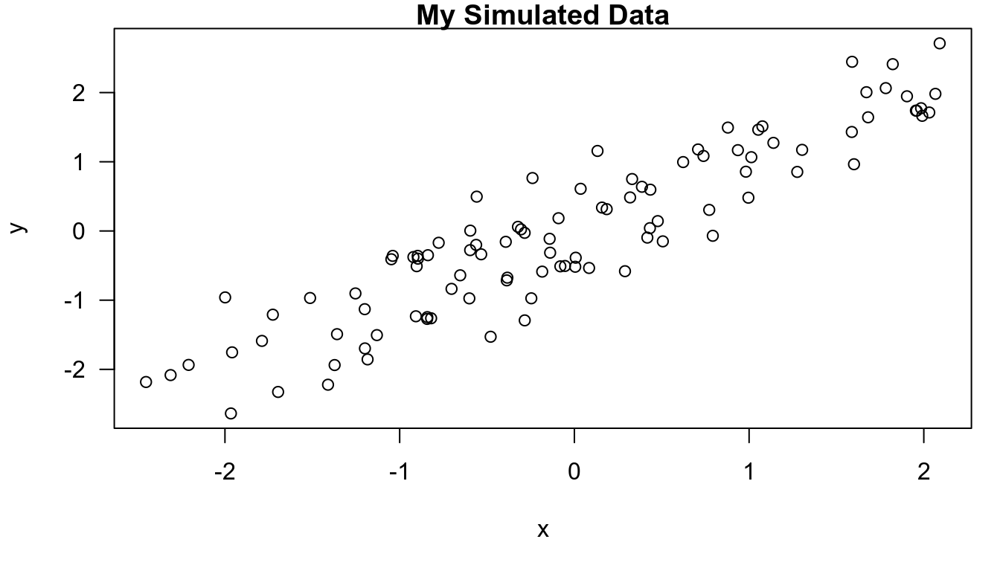

knitr for
reproducible reports.
knitr be
ideal for? and not?knitr document.## symbols and/or the results.xtable package.
opts_chunk variable in knitr.cache chunk option.
The name “Markdown” is a play on the name of “markup” languages.
Markdown essentially is:
A tool for writing for the web.
A simplified version of “markup” languages.
In words of its creator John Gruber, creator of Markdown:
“Markdown is a text-to-HTML conversion tool for web writers. Markdown allows you to write using an easy-to-read, easy-to-write plain text format, then convert it to structurally valid XHTML (or HTML)”.
However, since its inception, Markdown has evolved to be widely adopted for a variety of purposes, far beyond writing for the web.
Its key feature is that it can be read as-is, without any special formatting.
HTML or
LaTeX, require that numerous formatting elements (tags) be
included in the text to instruct the program that will be formatting the
text for reading on how to display the text.The benefit of Markdown for writers is that it allows one to focus on writing as opposed to formatting.
*This text will appear italicized!*
_so will this text_This text will appear italicized!
so will this text
**This text will appear bold!**
__as will this text__This text will appear bold!
as will this text
# This is a primary heading (think <h1> in HTML)
## This is a secondary heading
### This is a tertiary heading- first item in list
- second item in list
- third item in list 1. first item in list
2. second item in list
3. third item in list Notice: you don’t have to worry about the specific ordering of the numbers in the ordered list. As long as there are numbers there, Markdown will put them in the right order.
So, the following Markdown source:
1. first item in list
2. second item in list
4. Whoops! Forgot one
3. third item in listwill get processed as:
The number one school of the public health is the [Johns Hopkins Bloomberg School of Public Health](http://www.jhsph.edu/).
The first thing you always want to do is [Download R](http://www.r-project.org/).
The second thing you want to do is get [RStudio](http://www.rstudio.com/).The number one school of the public health is the Johns Hopkins Bloomberg School of Public Health.
The first thing you always want to do is Download R.
The second thing you want to do is get RStudio.
Occasionally, we have to put so many links into a document that the document starts getting difficult to read because of all the URLs.
In that case, there is an alternate approach to linking that is akin to inserting footnotes.
I spend so much time reading [R bloggers][1] and [Simply Statistics][2]!
[1]: http://www.r-bloggers.com/ "R bloggers"
[2]: http://simplystatistics.org/ "Simply Statistics" I spend so much time reading R bloggers and Simply Statistics!
Newlines require a double space after the end of a line.
Example without double space at the end of the first line.
First line
Second line First line Second line
Example with double space at the end of the first line.
First line
Second lineFirst line
Second line
R markdown is the integration of R code with Markdown.
Documents written in R Markdown have R code nested inside of them, which allows one to to create documents containing “live” R code.
We’ll see below the syntax to introduce code chunks.
R Markdown files cannot be evaluated using standard Markdown tools.
Rather, R code is evaluated as part of the processing of the Markdown before the traditional Markdown tools are called.
In fact, the processing of a R markdown file starts with its
conversion to standard markdown, and that
first step can be done using the knitr package in
R.
Results from R code are inserted into Markdown document. Markdown
can subsequently be converted to HTML using the markdown
package in R, but you seldom have to call this package
explicitly.
The use of R Markdown to create reproducible reports is now a core tool in literate statistical programming and has largely replaced previous tools. The key reason for its usefulness is:
knitr
package.RStudio.
One co-benefit of using R Markdown is that any basic text editor can be used to create a document.
The R Markdown to Markdown to HTML work
flow can be easily managed using R Studio (but is not
required).
Lastly, R Markdown documents have the benefit that they are purely textual documents that can play well with version control systems that are primarily designed to track changes in text files.
knitr for reproducible reports.There are a number of challenges to making reproducible report writing a reality.
A general solution that attempts to address some of these challenges is literate statistical programming, a concept we introduced earlier.
There are both advantages and disadvantages to using a literate programming system for writing reports.
Some of the advantages are that:
Some disadvantages:
knitr be ideal for? and not?Generally speaking, knitr should be ideal
for:
On the other hand, knitr is not
particularly well-suited for:
If we’re not using RStudio, we can still process R Markdown documents with the knitr package directly.
library(knitr)
knit2html("document.Rmd")
browseURL("document.html")As we know, to do this in RSutudio, we just have to
click on the knit to HTML button.
knitr document.When we process a knitr document here’s what happens
under the hood:
.Rmd
extension)knitr produces a Markdown document (with a
.md extension)knitr converts the Markdown document into
HTML (by default)The process is .Rmd to .md to
.html.
RStudio deletes the intermediary
.md file by default..md
file.We should NOT edit (or even save) the .md or
.html documents until we are
finished (these documents will be overwritten the next
time we knit the .Rmd file).
Code chunks begin with ```{r} and end with just ```.
Code chunks can have names, which is useful when we start incorporating graphics (graphics file names are based on the code chunk name).
r, like this: ```{r
firstchunk} … ```Finally, by default, code in a code chunk is echoed back out to the document, as will the results of the computation (if there are results to print).
The output, also by default, is
prepended with two pound symbols
##.
This is there so that if we happen to be copying code from the HTML output and pasting it into the R console, we just copy and paste the code and don’t accidently paste the output too (the output will be commented out in the R console).
Occasionally, it’s useful to put some computations within a sentence.
The syntax to do this is use `r and end with `, putting the code in between (tipically the name a of a variable or a simple expression).
## symbols and/or the results.We can turn off the default behaviors of echoing the code, prepending the ## symbols and/or showing the excecution result itself, by setting the corrisponding options:
echo = FALSE turns off code echoing.
comment = NA turns off prepending the ## symbols in
the execution result.
results = "hide" turns off the excecution
result.
We can also make these options settings as global settings,
using the opts_chunk$set() method at the top of our
document:
knitr::opts_chunk$set(echo = FALSE, comment = NA, results = "hide")Let’s quote, as inline code, the current time and a random Normal variate as our “favorite” number (without echoing the corrisponding code).
Here’s the output.
Of course, incorporating data graphics with knitr is
straightforward. By default, nothing special
needs to be done.
set.seed(2)
x <- rnorm(100)
y <- x + rnorm(100, sd = 0.5)Here’s scatterplot of the data.
par(mar = c(5, 4, 1, 1), las = 1)
plot(x, y, main = "My Simulated Data")
knitr
embeds the figure into the HTML document as base 64 encoding
string.By default, when knitr creates the HTML document, it
embeds the figure into the HTML document (into the image tag) as base 64
encoded string, instead of pointing to the actual file.
This is useful sometimes because it makes the resulting HTML document stand alone.
However, it does make the resulting HTML much larger than it needs to be (and makes it totally unreadable).
xtable package.Tables can be made in R Markdown documents with the help of
the xtable package.
Tables can be notoriously nonreproducible if they are made by hand.
Luckly, the xtable package can take tabular
information and format it nicely in either
HTML or LaTeX.
In the code below, we fit a multiple linear regression model and then create a table of the regression coefficients.
summary() function when called on lm
objects.fit <- lm(Ozone ~ Wind + Temp + Solar.R, data = airquality)
summary(fit)
Call:
lm(formula = Ozone ~ Wind + Temp + Solar.R, data = airquality)
Residuals:
Min 1Q Median 3Q Max
-40.485 -14.219 -3.551 10.097 95.619
Coefficients:
Estimate Std. Error t value Pr(>|t|)
(Intercept) -64.34208 23.05472 -2.791 0.00623 **
Wind -3.33359 0.65441 -5.094 1.52e-06 ***
Temp 1.65209 0.25353 6.516 2.42e-09 ***
Solar.R 0.05982 0.02319 2.580 0.01124 *
---
Signif. codes: 0 '***' 0.001 '**' 0.01 '*' 0.05 '.' 0.1 ' ' 1
Residual standard error: 21.18 on 107 degrees of freedom
(42 observations deleted due to missingness)
Multiple R-squared: 0.6059, Adjusted R-squared: 0.5948
F-statistic: 54.83 on 3 and 107 DF, p-value: < 2.2e-16Here’s a table of regression coefficients.
library(xtable)
Attaching package: 'xtable'
The following objects are masked from 'package:Hmisc':
label, label<-
xt <- xtable(summary(fit))
print(xt, type = "html")| Estimate | Std. Error | t value | Pr(>|t|) | |
|---|---|---|---|---|
| (Intercept) | -64.3421 | 23.0547 | -2.79 | 0.0062 |
| Wind | -3.3336 | 0.6544 | -5.09 | 0.0000 |
| Temp | 1.6521 | 0.2535 | 6.52 | 0.0000 |
| Solar.R | 0.0598 | 0.0232 | 2.58 | 0.0112 |
results="asis".xtable generates its own HTML output,
so it doesn’t have to be subsequently converted into
HTML by knitr.This is just one simple example of how
xtable can be used to generate HTML tables.
print() method for xtable objects and
the help page is worth exploring.opts_chunk variable in
knitr.Sometimes we want to set an option that applies to all chunks in your document.
opts_chunk
variable, which is a global variable
in the knitr package.Usually, this is done by creating a code chunk
somewhere in the beginning of the document (before any
other code chunks in the document) and modifying the
opts_chunk object.
For example, as we saw erlier, if we wanted the default to be that all chunks do NOT echo their code and always hide their results, we could set:
knitr::opts_chunk$set(echo=FALSE, results="hide")Global options can always be overridden by any specific options that are set in at the chunk level.
cache chunk option.Earlier we mentioned that knitr is perhaps not so useful
if we are writing a very long document or one involving
complex computations.
However, there is one tool that can be useful and may help you circumvent some of these problems.
So, the basic issue is that if we have a long document or one involving lengthy computations, then every time we want to view your document in the pretty formatted version, we need to re-compile the document, meaning you need to re-run all the computations.
Chunk caching is one way to avoid these lengthy computations.
By setting the cache = TRUE chunk option, the chunk
is ran once, then the output is stored in a
database in our working directory.
Then, when we re-knit the document, instead of running the code in that particular chunk, knitr simply re-loads the stored output from the database.
It’s kind of like a chunk-level version of memoization.
However, if the code in the chunk
changes at all, knitr can
detect this and will re-run the code (and store the
reuslts again).
In particular, by default, dependencies between chunks are not checked.
Also, chunks with significant side effects, such as those writing output to files or interacting with the external environment in any way, may not be cacheable.
sessionInfo()
R version 3.6.3 (2020-02-29)
Platform: x86_64-pc-linux-gnu (64-bit)
Running under: Ubuntu 18.04.6 LTS
Matrix products: default
BLAS: /usr/lib/x86_64-linux-gnu/blas/libblas.so.3.7.1
LAPACK: /usr/lib/x86_64-linux-gnu/lapack/liblapack.so.3.7.1
locale:
[1] LC_CTYPE=es_AR.UTF-8 LC_NUMERIC=C
[3] LC_TIME=es_AR.UTF-8 LC_COLLATE=es_AR.UTF-8
[5] LC_MONETARY=es_AR.UTF-8 LC_MESSAGES=es_AR.UTF-8
[7] LC_PAPER=es_AR.UTF-8 LC_NAME=es_AR.UTF-8
[9] LC_ADDRESS=es_AR.UTF-8 LC_TELEPHONE=es_AR.UTF-8
[11] LC_MEASUREMENT=es_AR.UTF-8 LC_IDENTIFICATION=es_AR.UTF-8
attached base packages:
[1] stats graphics grDevices utils datasets methods base
other attached packages:
[1] xtable_1.8-4 kernlab_0.9-29 R.utils_2.10.1 R.oo_1.24.0
[5] R.methodsS3_1.8.1 impute_1.60.0 RColorBrewer_1.1-2 maps_3.3.0
[9] stringr_1.4.0 lubridate_1.9.2 quantmod_0.4.20 TTR_0.24.2
[13] xts_0.12.1 zoo_1.8-9 readr_2.0.1 tidyr_1.2.0
[17] dplyr_1.0.8 reshape2_1.4.4 Hmisc_4.4-0 ggplot2_3.3.5
[21] Formula_1.2-3 survival_3.4-0 lattice_0.20-45 jpeg_0.1-8.1
[25] gitignore_0.1.3 rhdf5_2.30.1 httr_1.4.2 httpuv_1.6.3
[29] sqldf_0.4-11 RSQLite_2.2.0 gsubfn_0.7 proto_1.0.0
[33] DBI_1.1.1 data.table_1.14.0 jsonlite_1.7.2 XML_3.99-0.3
[37] xlsx_0.6.3 plyr_1.8.6
loaded via a namespace (and not attached):
[1] colorspace_2.0-3 ellipsis_0.3.2 htmlTable_2.0.1
[4] base64enc_0.1-3 rstudioapi_0.13 farver_2.1.0
[7] bit64_4.0.5 fansi_1.0.2 splines_3.6.3
[10] knitr_1.41 rJava_0.9-13 cluster_2.1.4
[13] png_0.1-7 clipr_0.7.1 compiler_3.6.3
[16] backports_1.4.1 assertthat_0.2.1 Matrix_1.5-1
[19] fastmap_1.1.0 cli_3.6.0 later_1.3.0
[22] formatR_1.14 acepack_1.4.1 htmltools_0.5.2
[25] tools_3.6.3 gtable_0.3.0 glue_1.6.2
[28] Rcpp_1.0.7 jquerylib_0.1.4 vctrs_0.5.2
[31] nlme_3.1-162 xfun_0.36 xlsxjars_0.6.1
[34] timechange_0.2.0 lifecycle_1.0.3 scales_1.1.1
[37] vroom_1.5.5 hms_1.1.0 promises_1.2.0.1
[40] parallel_3.6.3 yaml_2.2.1 curl_4.3.2
[43] memoise_1.1.0 gridExtra_2.3 sass_0.4.0
[46] rpart_4.1.19 latticeExtra_0.6-29 stringi_1.7.6
[49] highr_0.9 checkmate_2.0.0 chron_2.3-55
[52] rlang_1.0.6 pkgconfig_2.0.3 evaluate_0.19
[55] purrr_0.3.4 Rhdf5lib_1.8.0 htmlwidgets_1.5.4
[58] labeling_0.4.2 bit_4.0.4 tidyselect_1.2.0
[61] magrittr_2.0.2 R6_2.5.1 generics_0.1.2
[64] pillar_1.7.0 foreign_0.8-76 withr_2.5.0
[67] mgcv_1.8-41 nnet_7.3-18 tibble_3.1.8
[70] crayon_1.5.0 KernSmooth_2.23-20 utf8_1.2.2
[73] tzdb_0.3.0 rmarkdown_2.11 grid_3.6.3
[76] blob_1.2.2 digest_0.6.29 openssl_2.0.5
[79] munsell_0.5.0 viridisLite_0.4.0 bslib_0.3.0
[82] tcltk_3.6.3 askpass_1.1 Copyright © 2020 por Christian A. Karanicolas. Todos los derechos reservados. La elaboración de este sitio ha tenido como fuente principal de información el curso de Especialización en Ciencias de Datos brindado por la Johns Hopkins University a través de Coursera.